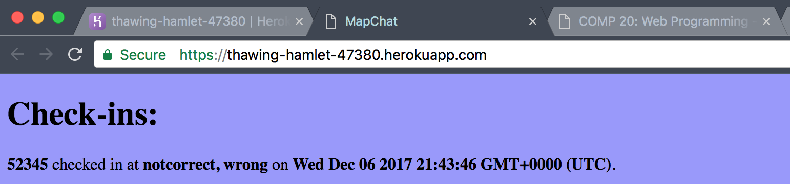

Issue: Cross-Site Scripting
Location: XSS result can be found at https://thawing-hamlet-47380.herokuapp.com
Severity: Medium since a user can affect the experience of another
Description: When data is sent to the app in the fields login, latitude, and
longitude the app does not remove special characters before inserting into the database.
So when the checkins are listed on the homepage, the script written by the user is
executed and results in an alert.

Proof of Vulnerability:

Resolution: Remove special characters from data before inserting into database
Issue: mongoDB Injection
Location: https://thawing-hamlet-47380.herokuapp.com/checkins.json
Severity: High because someone can view all the checkins of everyone that has checked in, allowing them to see every location the other users have been
Description: Using the mongoDB injection, https://thawing-hamlet-47380.herokuapp.com/checkins.json?login[$ne]="Sam", allows someone to access all the checkins for the other users since $ne means not equal and will find all the usernames not equal to "Sam". In addition, upon looking at the source code, my partner does not use the login to find specific users in the database. Anything added to the end of /checkins.json? will result in all user information being displayed.
Proof of Vulnerability:

Resolution: Install something like Sqreen in the Node.js app to prevent from mongoDB injections that does data validation on user input. Also, use the login to find specific users in the database instead of returning all users every time.
Issue: Bad Programming Practices
Location: Within the method of the route https://thawing-hamlet-47380.herokuapp.com/sendLocation
Severity: Low because incorrect data won't affect other users
Description: Data sent to the server in the fields login, latitude, and longitude is only checked if it is undefined. This allows the user to send anything to be stored in the database and not what it is intended by the developer. This can cause problems for applications that use the web server and rely on correct data from the server.
Proof of Vulnerability: 
Resolution: Add more checks to make sure the login is a string, the latitude and longitude are a float.